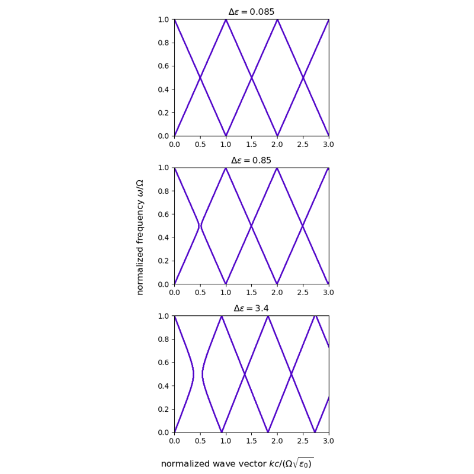

Examples¶ Electric field in a time-modulated slab Electric field in a time-modulated slab Time modulated material Time modulated material Slab quasi normal modes Slab quasi normal modes  Slab Slab Gallery generated by Sphinx-Gallery